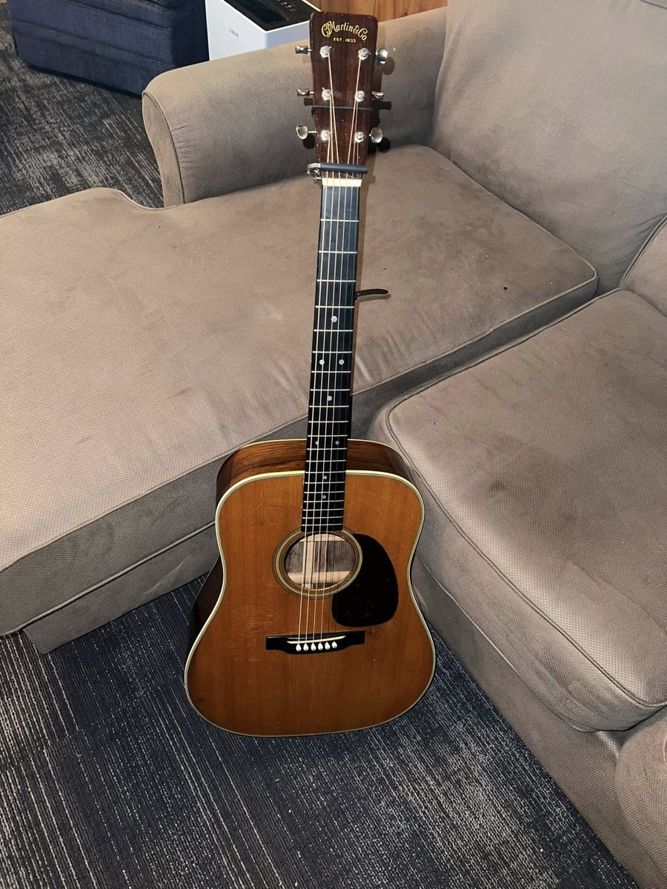
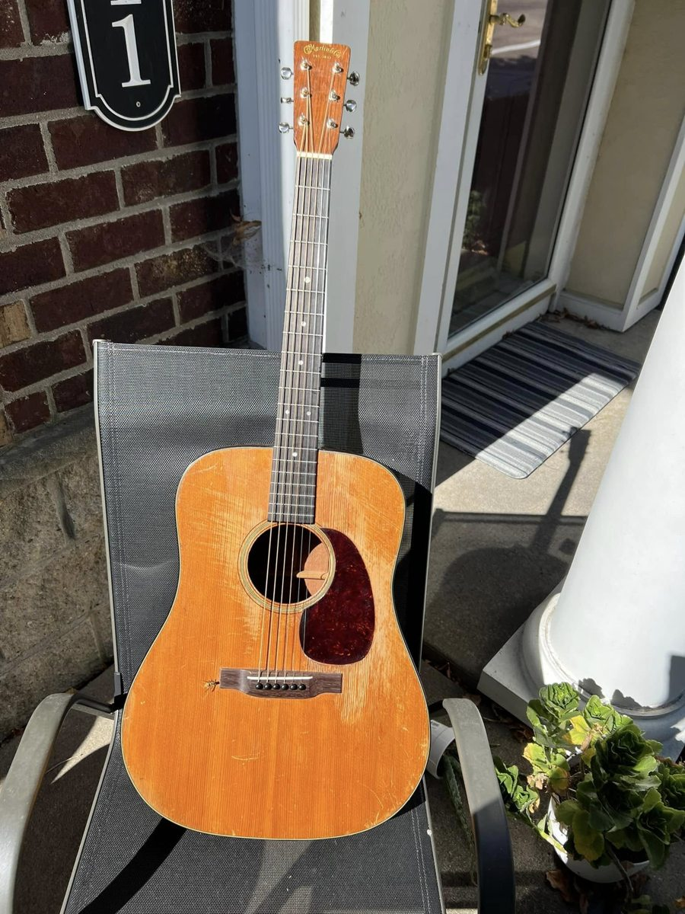

Why an old Martin Guitar?
My journey into vintage Martin guitars started with Hank Williams. When I listened to old recordings of Hank with just his voice and guitar, the tone sounded deep, warm, and balanced. I wanted that sound for myself.
Inspiration from Hank Williams
Once I got into Hank's music, I started researching what guitar he played and why it sounded the way it did. That research led me into the world of vintage Martin guitars, where small design changes over the years can make a big difference in tone and feel.
I went searching online for "that vintage Martin sound" I heard in Hank's recordings. I ended up looking through listings and learning what to pay attention to: the year, the build style, the condition, and how each guitar might sound.
What I Learned About Vintage Martins
What impressed me most was the craftsmanship. These guitars were built with care and quality materials, and many of them are still strong and playable decades later. Over time, they can also develop a sound that feels more open and alive.
I also learned that details like bracing location and fingerboard inlays changed through the years. Those changes helped me when I looked closely at photos of Hank and tried to understand which guitars he used over the short years of his career.
Tonewoods
I also started paying attention to tonewoods. The top wood and the rosewood back and sides are a big part of why these guitars can sound powerful and project so well. That combination is a big reason the vintage D-28 sound became the sound I was chasing.
For me, vintage Martins are more than instruments. They connect me to the music that inspired me to play in the first place.
After years of searching, I finally got the chance to buy a vintage D-18, and that's what pulled me into the vintage world. Eventually, I traded my 1949 Martin D-18 for a 1952 Martin D-28. The first time I strummed the D-28, I knew right away I'd found it, strong bass, clear notes, and that classic vintage Martin tone. I still hear old Hank when I play.

